Resumen
OpenStack-STIC es la plataforma de Infraestructura como servicio (IaaS) del Servicio de las Tecnologías de la Información y las Comunicaciones de la Universidad de Almería. Actualmente ofrece servicios de máquinas virtuales, almacenamiento como servicio (almacenamiento de bloques y volúmenes NFS) y balanceadores como servicio.
Además, OpenStack-STIC es el soporte para el resto de servicios cloud del STIC (Cloud-STIC), como el registro de imágenes Docker y Kubernetes.
-
Ofrecer Infraestructura como servicio para el STIC.
-
Ofrecer máquinas virtuales para la virtualización de puestos de trabajo y aulas.
1. Servicios que ofrece OpenStack-STIC
OpenStack-STIC es el proyecto de Cloud-STIC que ofrece Infraestructura como servicio. Pese a ser el proyecto de base sobre el que se sustenta el cloud del STIC, lo consideramos como un componente más.
Actualmente, OpenStack-STIC ofrece:
-
Servicios para la creación de Máquinas y Aulas virtuales.
-
Servicios de Almacenamiento, tanto de bloques como volúmenes NFS.
-
Balanceadores como servicio.
|
OpenStack-STIC es OpenStack Stein e incluye los componentes:
|
2. Servicios que ofrece Cloud-STIC
Algunos de los servidores del STIC, como los de registro de imágenes Docker y clusters de Kubernetes, son realmente máquinas virtuales creadas dentro de OpenStack-STIC.
|
Todos los servicios de OpenStack-STIC y de Cloud-STIC son servicios en red privada accesibles únicamente desde la UAL o por VPN con perfil STIC. |
3. Infraestructura de OpenStack-STIC
OpenStack-STIC cuenta con la siguiente configuración de servidores, ofreciendo alta disponibilidad en los servicios de control y red.
-
Servidores de control: 3
-
Servidores de red: 2
-
Servidores de cómputo: 24
-
RAM disponible: 4.608 GB
-
VCPUs: 576
-
Espacio disponible para instancias: 103,2 TB
-
Almacenamiento disponible para volúmenes: 10,4 TB
4. Primeros pasos en OpenStack-STIC
Para utilizar OpenStack-STIC es necesario disponer de una cuenta de usuario. El acceso sólo está permitido desde la red de la UAL. El acceso desde fuera de la UAL se realizará mediante VPN.
4.1. Solicitud de cuenta de usuario
-
Solicita mediante CAU el acceso a OpenStack-STIC. Te proporcionarán un dominio, un login y un password de acceso.
-
Introduce tus credenciales en OpenStack-STIC. Una vez dentro del sistema tendrás acceso a un proyecto OpenStack.
Un proyecto OpenStack es un conjunto de recursos disponible para uno o más usuarios. Ejemplos de recursos básicos son los núcleos de procesador (VCPU), RAM o espacio de almacenamiento.
De forma predeterminada cada usuario tiene un proyecto. No obstante, un mismo usuario puede ser miembro de más de un proyecto (p.e. Aulas, Servidores de Logs)
4.2. Cambio de la contraseña
Para cambiar la clave proporcionada, despliega el menú de las opciones del usuario conectado situado en la parte superior derecha y selecciona Settings.

Se desplegará un menú en la izquierda. A continuación, selecciona Change password.

4.3. Generación de claves SSH
Las claves SSH ofrecen una forma más segura de conexión remota ya que evitan la introducción de usuario y contraseña en los inicios de sesión, reduciendo el riesgo de ataques de fuerza bruta para descubrimiento de contraseñas. Además, suponen una opción más cómoda de inicio de sesión, ya que evitan el recordar las contraseñas en cada conexión.
Las claves SSH se generan en pares, dando lugar a la clave privada y a la clave pública. La clave privada ha de ser protegida y no debe ser compartida con nadie. La clave pública puede ser compartida libremente y se insertará en las instancias en el momento de su creación.
Para generar un par de claves SSH, ejecuta el comando siguiente en una terminal Linux o Mac. Para usuarios Windows se recomienda usar Git for Windows, disponible al instalar Git.
ssh-keygen
Si no indicamos otro nombre, esto genera dos archivos con los nombres id_rsa e id_rsa.pub que se almacenarán en la carpeta home del usuario en la rutas:
-
Clave privada:
/home/user/.ssh/id_rsa -
Clave pública:
/home/user/.ssh/id_rsa.pub
También se pedirá la introducción de una contraseña para el uso del par de claves. Por ahora, lo dejaremos sin contraseña.
4.4. Registra tus claves SSH
Para el acceso SSH a máquinas virtuales Linux creadas en OpenStack-STIC es necesario tener registrada una clave SSH pública en la cuenta de usuario de OpenStack-STIC. La clave pública SSH será inyectada a las instancias creadas en el proceso de inicialización. Una vez creada la instancia, se accederá a ella mediante la clave privada SSH correspondiente almacenada en el cliente.
-
Inicia sesión en OpenStack-STIC.
-
En el menú de la izquierda selecciona
Project | Compute | Key Pairs -
Si dispones de una clave SSH, pulsa el botón
Import Public Key. En el formulario:-
Introduce en
Key Pair Nameel nombre que quieres asignar a tu clave pública en OpenStack-STIC -
Elige
SSH Keyen el desplegableKey Type -
Carga tu clave pública con el botón
Examinar … o pegándola directamente en el cuadro de texto `Public Key.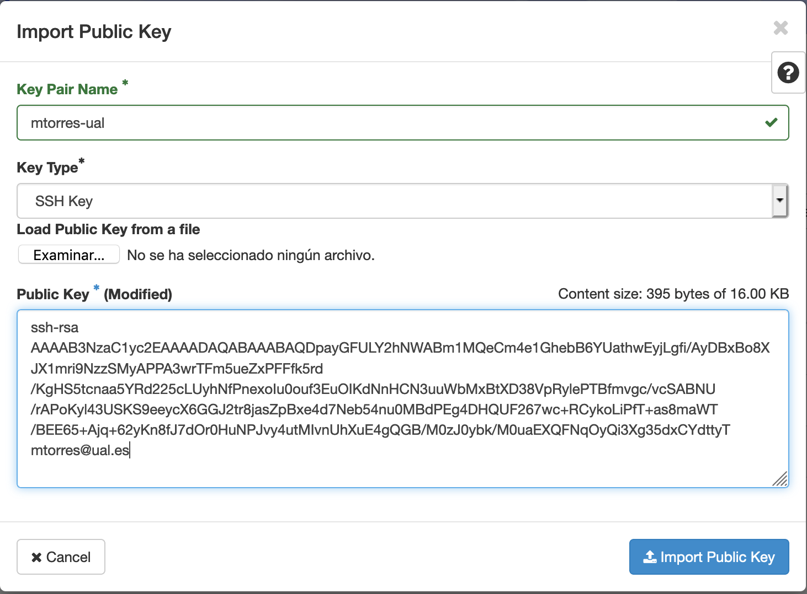
Si eres usuario de Windows, se recomienda instalar Git for Windows. Este software, además de instalar Git para control de versiones, instalará Git BASH en tu sistema, un emulador BASH que te será muy útil para la conexión SSH a máquinas virtuales Linux desde tu sistema Windows.
-
-
Si no dispones de una clave SSH, o bien no quieres o no puedes generarla, OpenStack-STIC puede crear un par de claves. Para crear tu par de claves desde OpenStack-STIC pulsa el botón
Create Key Pair. Introduce en el formulario el nombre que quieras a dar a tu clave SSH y seleccionaSSH Keyen el desplegableKey Type.
A continuación, pulsa el botón
Create Key Pair. Descarga la clave generada.
4.5. Configuración de las Reglas de seguridad
En OpenStack-STIC, cada proyecto tiene sus propias reglas de seguridad, y funcionan a modo de cortafuegos sobre las instancias definidas en el proyecto.
De forma predeterminada, las instancias creadas no se pueden comunicar con el exterior. Configura las reglas de seguridad (p.e. abriendo los puertos SSH, RDP para escritorio remoto de Windows, HTTP para servidores web, …) de tu proyecto para que se pueda acceder de forma adecuada a las instancias.
La configuración básica de las reglas de seguridad se puede realizar en el menú Project | Network | Security Groups. Desde ahí podrás configurar las reglas predeterminadas (default) para todas las máquinas virtuales de un proyecto o crear nuevos grupos de seguridad con reglas específicas.
Pulsando el botón Manage Rules accedemos a las reglas de seguridad predeterminadas (default) de este proyecto. Por tanto, las máquinas virtuales creadas en este proyecto a las que se apliquen las reglas de seguridad default tendrían abierta la comunicación de acuerdo con las reglas indicadas en el grupo de seguridad.

|
De forma predeterminada, el grupo de seguridad |
Pulsa el botón Add Rule para añadir reglas de seguridad. En el formulario selecciona la regla de seguridad aplicable a las instancias.

|
Reglas se seguridad básicas:
|

|
En la red OpenStack-STIC sólo están abiertos los puertos 80 (HHTP), 22 (SSH) y 3389 (RDP) para la conexión VPN. Si necesitas la apertura de un puerto concreto para una instancia o subred determinada, tendrás que solicitarlo mediante CAU. |
4.6. Creación de una máquina virtual
Puedes crear una máquina virtual seleccionando Project | Compute | Instances y pulsando el botón Launch instance.

En el asistente deberás proporcionar:
-
Paso 1: Nombre de la instancia y cantidad de instancias a crear. La zona de disponibilidad siempre es
nova. El formulario también muestra el total de instancias (máquinas virtuales) creadas y disponibles.

-
Paso 2: En la fuente, selecciona
ImageoInstance snapshotdependiendo de si quieres crear una instancia a partir de una imagen limpia, o bien desde un snapshot creado previamente, respectivamente. A continuación, selecciona de la secciónAvailablela imagen base para la instancia, el cual se podrá filtrar introduciendo en el cuadro de búsqueda alguno de los caracteres del nombre de la imagen.
|
Desactiva la creación de un nuevo volumen asociado a la instancia. Crear una máquina virtual sobre un volumen hará que la máquina virtual se almacene en el NAS en lugar de en los servidores de cómputo.
Si más adelante necesitas crear uno o más volúmenes para tu instancia, podrás crearlos desde el menú de volúmenes ( |

-
Paso 3. Sabor de las instancias creadas. OpenStack denomina sabor a un conjunto de propiedades que representan las características hardware de las instancias a crear (número de VPUs, RAM, espacio de disco, …). Selecciona un sabor adecuado para la instancia a crear.

|
Una señal de advertencia puede estar indicando un sabor demasiado pequeño para la instancia a crear o una superación de la cuota de los recursos del proyecto. |
-
Paso 4. Red a la que conectar la instancia creada. Seleccionar entre las redes disponibles la red a la que conectar la máquina virtual. Normalmente, conectaremos la instancia en la red del proyecto, aunque es posible conectarla a cualquier otra red que tengamos creada.

-
Paso 5. Selección de grupos de seguridad. Los grupos seleccionados estableceran los puertos y el tipo de comunicación permitida con la instancia creada. Selecciona todos los grupos de seguridad aplicables a la instancia creada. En la sección
Allocatedaparecerán todos los grupos de seguridad aplicables inicialmente a la instancia.

-
Paso 6. Selección de la clave pública. Para instancias Linux deberemos seleccionar la clave pública a inyectar a la instancia creada. Dicha clave será la que se emparejará con nuestra clave privada local en el momento de la conexión SSH.
|
En máquinas Windows no es necesario inyectar la clave pública. |

|
No seleccionar una clave pública para una instancia Linux creada supondrá la creación de una instancia a la que no nos podremos conectar, ya que de forma predeteminada, las instancias Linux de OpenStack-STIC sólo permiten su acceso a través de claves SSH. |
Pulsar el botón Launch Instance para proceder a la creación de la instancia. Tras unos instantes la instancia estará creada y disponible para su uso.
4.7. Iniciar, reiniciar y apagar una máquina virtual
Puedes iniciar, reiniciar y apagar una máquina virtual desplegando las acciones que aparecen a su lado en el listado de instancias del proyecto Project | Compute | Instances.
-
Iniciar instancia:
Start Instance -
Apagar instancia:
Shutoff Instance -
Reiniciar instancia:
Soft Reboot InstanceoHard Reboot Instance
|
No confundir |
4.8. Asignación de IP flotante
Las instancias creadas son conectadas a una de las redes privadas de un proyecto OpensStack-STIC. Inicialmente, es posible la comunicación entre las instancias de dicha red. Pero de forma predeterminada, no es posible la conexión a la instancia creada desde nuestro equipo de trabajo, o en general, desde otro equipo que esté fuera de la red del proyecto en el que se ha creado la máquina virtual.
Podemos ver la instancia creada y conectada a la red del proyecto en el menú Project | Network | Network Topology.

Las IPs flotantes son la base para la comunicación con la instancia desde el exterior. Nuestro proyecto tiene una cuota de IPs flotantes y deberemos gestionarlas de forma eficiente.
Para asignar una IP flotante a una instancia, mostrar en primer lugar la lista de instancias (Project | Compute | Instances). A continuación, seleccionar Associate Floating IP en el menú desplegable de la instancia.

En el formulario, pulsar el botón + para pedir una IP flotante.

El formulario siguiente muestra la red que propocionará las IPs flotantes (ual-net), que es la red de OpenStack-STIC. En este formulario pulsaremos el botón Allocate IP.

|
El STIC tiene reservada la red 192.168.128.0/21 para OpenStack-STIC. |
De vuelta al formulario, se mostrará la IP flotante asignada de la red ual-net. Pulsar el botón Associate.

Ahora la instancia aparecerá con la IP flotante asignada, la cual podremos usar para conectarnos a ella desde fuera de la red privada de OpenStack-STIC en la que se creó.

4.9. Conexión a la máquina virtual
Una vez creada la máquina virtual y asignada una IP flotante en el caso de que queramos conectarnos a ella desde una red diferente a la que fue creada, usaremos un cliente para conectarnos a ella usando un cliente.
| Sistema operativo | Uso | Cliente recomendado |
|---|---|---|
Linux |
Terminal |
Terminal |
Linux con Interfaz gráfica |
||
Máquina Windows |
||
Mac |
Terminal |
Terminal |
Linux con Interfaz gráfica |
||
Máquina Windows |
||
Windows |
Terminal |
Git BASH, Putty |
Linux Interfaz gráfica |
||
Máquina Windows |
Cliente de escritorio remoto |
5. Imágenes y Snapshots en OpenStack-STIC
Actualmente están disponibles las imágenes siguientes en OpenStack-STIC:
| Image | Login | Modo de acceso |
|---|---|---|
Ubuntu 16.04 LTS |
ubuntu |
Key Pair |
Ubuntu 18.04 LTS |
ubuntu |
Key Pair |
CentOS 6 |
centos |
Key Pair |
CentOS 7 |
centos |
Key Pair |
cirros |
cirros |
Key Pair |
Windows 10 |
usuario |
credenciales |
|
Contacta vía CAU para obtener la contraseña para instancias en las que el modo de acceso no sea con Key Pair. |
5.1. Subir una imagen
Normalmente la subida de imágenes es una tarea que se debe dejar a los administradores de OpenStack-STIC. No obstante, si se trata de imágenes sin interés para uso general, se pueden seguir estos pasos para tener una imagen disponible en el proyecto personal.
Las imágenes se subirán en formato QCOW2 y OpenStack matiene una página con enlaces a descargas de imágenes configuradas para ejecutarse en modo cloud (con el paquete cloud-init, soporte para el acceso mediante claves SSH e inyección de datos de usuario.
-
Inicia sesión en OpenStack-STIC.
-
Selecciona el proyecto en el que crear la imagen.
-
En el menú de la izquierda selecciona
Project | Compute | Images. -
Pulsa el botón
Create Image. -
En el formulario completa los datos siguientes:
-
Nombre de la imagen (p.e.
openSsure Leap 15.1). -
`Image Source: Introduce el archivo con la imagen descargada.
-
Format: SeleccionarQCOW2. -
Protected: Indica si las configuraciones establecidas enRawdisk, Minimum Disk, Minimum RAMpueden ser modificadas por otros usarios a los que le diéramos permiso de uso sobres esta imagen en el caso de hacerla pública.
-
-
Tras pulsar
Create Imagese procederá a la subida y creación de la imagen.
La imagen aparecerá tras unos instantes en la lista de imágenes disponibles.
5.2. Proteger/Desproteger una imagen
En una imagen se puede proteger la configuración de parámetros como RAM y disco mínimo para poder crear instancias a partir de ella. Una imagen protegida impedirá que otros usuarios puedan modificar estos valores.
-
Inicia sesión en OpenStack-STIC.
-
Selecciona el proyecto en el que proteger la imagen.
-
En el menú de la izquierda selecciona
Project | Compute | Images. -
Selecciona la imagen a proteger, despliega el listbox de
Actionsy seleccionaEdit Image. -
Pulsa en los botones
Yes | NodeProtectedenImage Sharing. -
Aplica los cambios pulsando el botón
Update Image.
5.3. Crear snapshot de una instancia
Un snapshot es una imagen creada a partir del estado del disco de una instancia a modo de fotografía de una instancia. El snapshot creado puede ser usado posteriormente para crear nuevas instancias, lo que lo hace una buena opción para la distribución de instancias con software preinstalado y configuraciones aplicadas.
-
Inicia sesión en OpenStack-STIC.
-
Selecciona el proyecto en el que crear el snapshot.
-
En el menú de la izquierda selecciona
Project | Compute | Instances. -
Selecciona la instancia a la que crear el snapshot y selecciona
Create Snapshoten el listbox deActionsde la instancia.
Tras unos instantes, el snapshot estará creado y listo para ser replicado.
|
Los snapshots no son etiquetados como imágenes, sino como snapshot images Es importante tener esto en cuenta porque a la hora de crear una instanncia a a partir de ellos, habrá que seleccionar snapshot images como origen de la instancia en el Asistente para la creación de instancias. No obstante, esto se puede modificar cambiando los metadatos del snapshot, cambiando los valores de las propiedades |
6. Uso de volúmenes en OpenStack-STIC
OpenStack-STIC ofrece un servicio de almacenamiento de bloques, lo que nos permite poder crear volúmenes y conectarlos a máquinas virtuales. Los volúmenes nos dan almacenamiento persistente, entendido como que el volumen se conserva a pesar de que se elimine la máquina virtual a la que está conectado.
6.1. Creación de un volumen
-
Inicia sesión en OpenStack-STIC.
-
Selecciona el proyecto en el que crear el volumen.
-
En el menú de la izquierda selecciona
Project | Volumes. -
En la pestaña
Volumespulsa el botónCreate Volume.
-
En el formulario introduce los valores para el nombre del volumen y el tamaño.

-
Pulsa el botón
Create Volume.
Tras unos instantes el volumen aparecerá en la lista de volúmenes creados y disponible para ser conectado a una instancia.
6.2. Conexión de un volumen a una instancia
Una vez creado un volumen, éste puede ser conectado a una instancia.
|
Un volumen sólo puede estar conectado a una instancia. Para conectarlo a otra instancia, el volumen tendrá que ser desconectado previamente. |
-
Inicia sesión en OpenStack-STIC.
-
Selecciona el proyecto en el que crear el volumen.
-
En el menú de la izquierda selecciona
Project | Volumes. -
En el submenú
Volumesselecciona el volumen que quieras conectar a una instancia, despliega el listbox deActionsy seleccionaManage Attachments.
-
Selecciona en el formulario la instancia a la que conectar el volumen y después pulsa el botón
Attach Volume

Tras unos instantes el volumen aparecerá conectado a la instancia indicando que está en uso y el dispositivo en el que está disponible.

A continuación sigue los pasos del sistema operativo en el que se haya conectado el volumen para inicializarlo (crear tabla de particiones, formatear, montar, …)
6.3. Desconexión de un volumen
-
Inicia sesión en OpenStack-STIC.
-
Selecciona el proyecto en el que está el volumen a desconectar.
-
En el menú de la izquierda selecciona
Project | Volumes. -
En la pestaña
Volumesselecciona el volumen que quieras desconectar a una instancia, despliega el listbox deActionsy seleccionaManage Attachments. -
Pulsa el botón
Detach Volumepara desconectar el volumen de la instancia
A continuación aparecerá un cuadro de diálogo de confirmación. Pulsar el botón Detach Volume para liberar el volumen de la instancia.
6.4. Extender un volumen
-
Inicia sesión en OpenStack-STIC.
-
Selecciona el proyecto en el que está el volumen a desconectar.
-
En el menú de la izquierda selecciona
Project | Volumes.Desconecta el volumen antes de ampliarlo.
-
En la pestaña
Volumesselecciona el volumen que quieras extender, despliega el listbox deActionsy seleccionaExtend Volume. -
Configura el nuevo tamaño del volumen en el formulario.
6.5. Transferir un volumen a otro proyecto
Un volumen sólo se puede utilizar en el proyecto al que pertence, pudiendo intercambiarse entre las distintas máquinas virtuales del proyecto. Sin embargo, hay situaciones en las que estamos interesados en usar un volumen en una instancia que tenemos en otro proyecto, o transferir el volumen a otro usuario de OpenStack-STIC. Esta operación es la que se conoce como Transferir un volumen en OpenStack.
|
Para transferir un volumen, éste ha de estar desconectado. Consulta la sección Desconexión de un volumen |
-
Inicia sesión en OpenStack-STIC.
-
Selecciona el proyecto en el que está el volumen.
-
En el menú de la izquierda selecciona
Project | Volumes. -
En la pestaña
Volumesselecciona el volumen que quieras transferir, despliega el listbox deActionsy seleccionaCreate Transfer.
-
Introduce un nombre significativo de la transferencia para que pueda ser identificado claramente por otras personas en el caso de que se vaya a transferir el volumen a otro usuario OpenStack.

-
Pulsa el botón
Create Volume Transfer. Como resultado se nos mostrará un ID de transferencia y una clave de autorización que debemos conservar para poder completar el proceso de transferencia del volumen.
-
Descargar el arvhivo con los datos de la transferencia pulsando el botón
Download transfer credentials. El volumen quedará pendiente de que se complete el proceso aceptando la transferencia.
-
En el proyecto de destino de la transferencia pulsar el botón
Accept Transfer. -
Introducir en el formulario los valores de ID de transferencia y Clave de autorización que descargamos en el archivo de credenciales de la transferencia

-
Pulsar el botón
Accept Volume Transfer. El volumen aparecerá transferido en la lista de volúmenes disponibles del proyecto de destino.
6.6. Eliminar volumen
-
Inicia sesión en OpenStack-STIC.
-
Selecciona el proyecto en el que está el volumen.
-
En el menú de la izquierda selecciona
Project | Volumes. -
En la pestaña
Volumesselecciona el volumen a eliminar, despliega el listbox deActionsy seleccionaDelete Volume. -
Confirma la eliminación en el cuadro de diálogo.
7. Aprovisionamiento de una instancia durante la creación
Al crear una instancia en OpenStack-STIC es posible aprovisionarla (configurarla) durante su proceso de creación. De esta forma, nuestras instancias ya tendrán instalados y configurados los paquetes necesarios.
La configuración de una instancia se realiza en el paso de Configuration del asistente. Básicamente, hay que incluir un script bash en el cuadro de texto Customization Script tal y como muestra la figura siguiente.

A continuacion, se muestra el script de configuración de Docker CE en una instancia Ubuntu durante su creación.
8. Almacenamiento compartido de archivos (NFS)
OpenStack-STIC permite la creación de volúmenes NFS y ser compartidos por varias instancias. Los volúmenes NFS nos dan almacenamiento persistente, de forma que el volumen se conserva a pesar de que se eliminen las máquinas virtuales a las que esté conectado.
8.1. Creación de un volumen NFS
-
Inicia sesión en OpenStack-STIC.
-
Selecciona el proyecto en el que crear el volumen.
-
En el menú de la izquierda selecciona
Project | Share. -
En en submenú
Sharespulsa el botónCreate Share.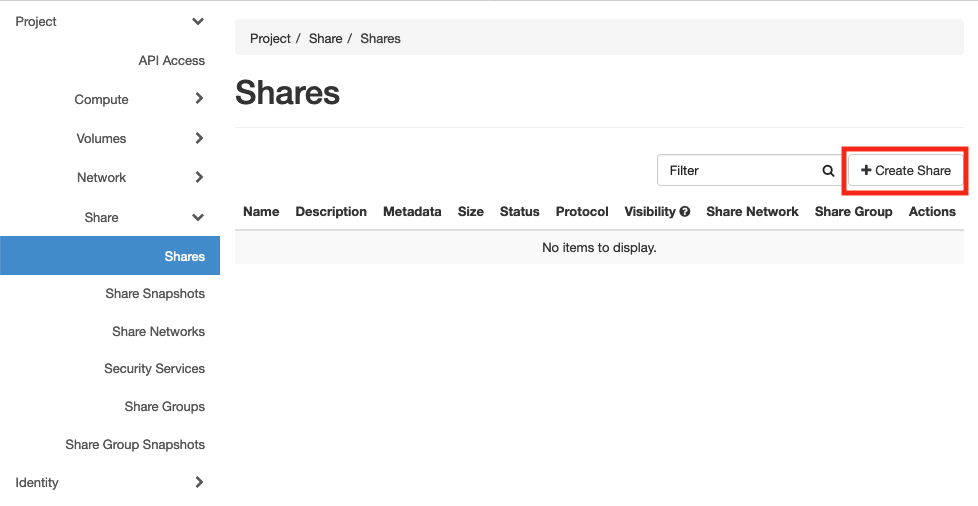 -
En el formulario introduce los valores para el nombre del volumen NFS, el tamaño y el tipo de volumen NFS (
default_share_type). MantenerNFScomo protocolo.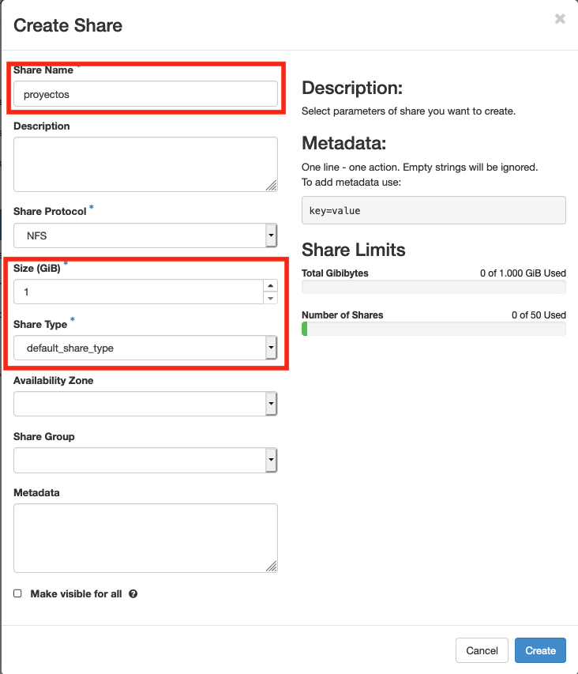 -
Pulsa el botón
Create.
Tras unos instantes, el volumen NFS aparecerá en la lista de volúmenes creados y disponible para ser conectado a las instancias necesarias.
8.2. Configuración de las reglas de acceso
Una vez creado un volumen NFS, hay que configurar las reglas de acceso que permiten su uso desde las distintas instancias que lo tengan conectado.
|
Es posible definir reglas de acceso diferentes para cada instancia (p.e. una instancia tiene acceso de lectura/escritura mientras que el resto sólo lo tienen de lectura). |
-
Inicia sesión en OpenStack-STIC.
-
Selecciona el proyecto en el está creado el volumen.
-
En el menú de la izquierda selecciona
Project | Share. -
En en submenú
Sharesselecciona el volumen NFS que quieras configurar, despliega el listboxActionsy seleccionaManage Rules.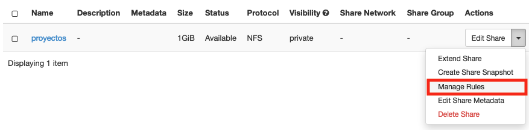 -
Pulsa el botón
Add Rule -
Completa el formulario
Add Rulecon las reglas de acceso al volumen NFS. A continuación se muestra cómo dar acceso de lectura/escritura vía IP a la dirección IP192.168.134.208.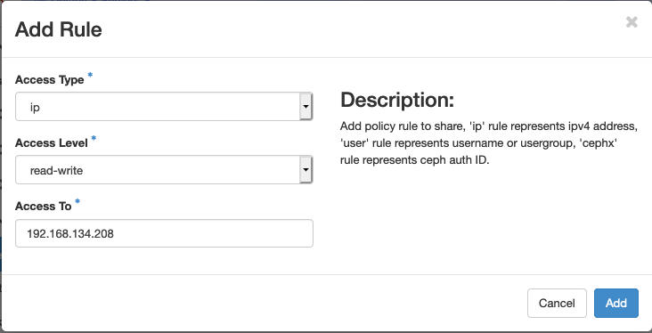 -
Pulsar
Addpara definir la regla de acceso.
Aparerá la regla definida para el volumen NFS.
|
Las reglas no se pueden modificar. Habrá que eliminarla y volver a crearla de nuevo |
|
Para dar acceso a varias máquinas virtuales, basta con añadir nuevas reglas indicando la IP el nivel de acceso deseado. |
8.3. Conexión de un volumen NFS a una instancia
Una vez definidas las reglas de acceso a un volumen NFS procederemos a conectarlo a una instancia.
-
Inicia sesión en OpenStack-STIC.
-
Selecciona el proyecto en el que está creado el volumen NFS.
-
En el menú de la izquierda selecciona
Project | Share. -
En el submenú
Shareshaz clic sobre el nombre volumen NFS que quieras conectar a una instancia. -
En la página aparecen los detalles definidos con las reglas de acceso. Copia el valor de
Path. Este será el valor que usaremos en las instancias que monten este volumen.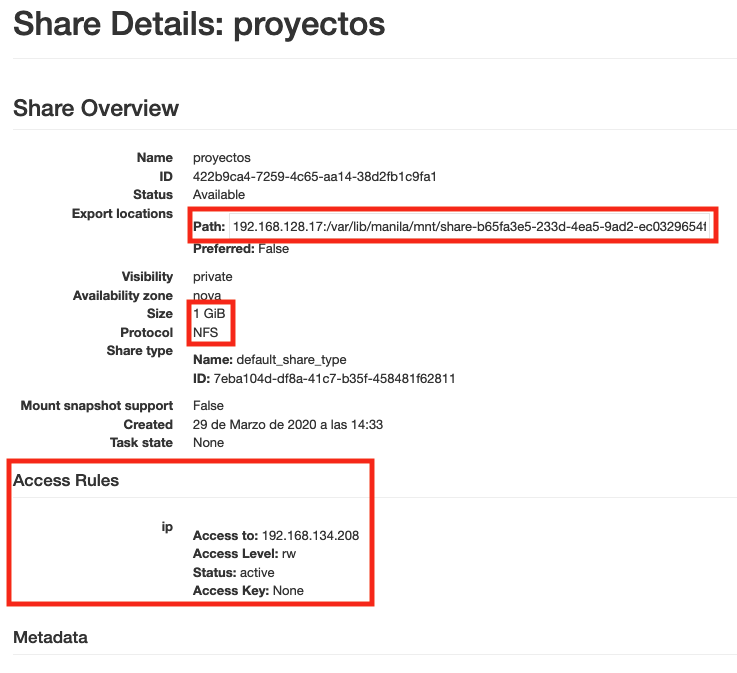 -
Selecciona en el formulario la instancia a la que conectar el volumen y después pulsa el botón
Attach Volume
A continuación sigue los pasos del sistema operativo en el que se haya conectado el volumen para inicializarlo y usarlo (crear tabla de particiones, formatear, montar, …)
$ sudo apt install nfs-common (1)
$ sudo mkdir /mnt/proyectos (2)
$ sudo mount 192.168.128.17:/var/lib/manila/mnt/share-b65fa3e5-233d-4ea5-9ad2-ec0329654fba /mnt/proyectos (3)| 1 | Instalación de paquetes NFS |
| 2 | Creación del directorio donde montar el volumen NFS |
| 3 | Montar el volumen NFS en el directorio creado usando el path devuelto en las propiedades del volumen NFS. |
Podemos comprobar que el volumen está creado
8.4. Extender un volumen NFS
Los volúmenes NFS pueden ser extendidos y esta operación se puede hacer en caliente, sin necesidad de desconectar el volumen previamente.
-
Inicia sesión en OpenStack-STIC.
-
Selecciona el proyecto en el que está creado el volumen NFS.
-
En el menú de la izquierda selecciona
Project | Share. -
En el submenú
Sharesdespliega el menúActionsdel volumen NFS que quieras extender y seleccionaExtend Share. -
Define el nuevo tamaño del volumen y pulsa el botón
Extend.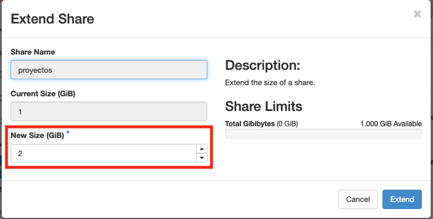
Se puede comprobar que, tras extender el volumen, el espacio aparece disponible de inmediato.
8.5. Eliminar un volumen NFS
-
Inicia sesión en OpenStack-STIC.
-
Selecciona el proyecto en el que está creado el volumen NFS.
-
En el menú de la izquierda selecciona
Project | Share. -
Asegúrate que no hay instancias que estén usando el volumen NFS a eliminar.
-
En el submenú
Sharesdespliega el menúActionsdel volumen NFS que quieras eliminar y seleccionaDelete Share. -
Confirma su eliminación en el cuadro de diálogo.
9. Balanceadores como servicio (LBaaS)
OpenStack-STIC ofrece un servicio muy interesante para poder crear balanceadores de carga. Los balanceadores definidos podrán distribuir las peticiones entre cada uno de los miembros del conjunto de recursos balanceados. LBaaS nos pemitirá definir varios pools de recursos, cada uno con sus miembros. En cada pool se establecerá una política o método de balanceo a elegir entre least connections, round robin o source ip.
Para ilustrar su uso partimos de dos servidores Apache instalados en dos máquinas virtuales diferentes. Crearemos un balanceador con política de round robin.
9.1. Creación de un balanceador
-
Inicia sesión en OpenStack-STIC.
-
Selecciona el proyecto en el que crear el balanceador.
-
En el menú de la izquierda selecciona
Project | Network | Neutron Load Balancers. -
Pulsa el botón
Create Load Balancer.
9.1.1. Paso 1. Configurar los detalles del balanceador
En este paso estableceremos el nombre del balanceador y la red (p.e. la red del proyecto) donde se encuentran los recursos a balancear.
9.1.2. Paso 2. Configurar los detalles del listener
El listener es el proceso que se encargar de comprobar las peticiones de acuerdo con el puerto y el protocolo que se configure.
Para nuestro ejemplo configuraremos el protocolo HTTP y el puerto 80 y dejaremos el nombre de listener predeterminado.
9.1.3. Paso 3. Configurar el método de balanceo del pool
El pool contiene la lista de miembros que sirven contenido a través del balanceador. En este paso se define el método que se utilizará para balancear eligiendo entre least connections, round robin o source ip.
Para nuestro ejemplo usaremos el método round robin y dejaremos el nombre de pool predeterminado.

9.1.4. Paso 4. Configurar los miembros del pool
En este paso añadiremos los miembros del pool, que en nuestro caso serán los dos servidores Apache. Para ello, se pulsa el botón Add del grupo de Available Instances sobre cada miembro que se quiera incorporar al pool. Los miembros seleccionados quedarán en el grupo Allocated Members.
También tendremos que definir el puerto de acceso a los miembros del pool. En nuestro caso será el 80.
9.1.5. Paso 5. Configurar el monitor del pool
Puede ocurrir que algunos miembros del pool dejen de estar disponibles en cualquier momento. Para evitar dirigir peticiones a miembros no disponibles, se define un monitor, que comprueba periódicamente el estado de los miembros. Cuando un miembro deja de contestar se retira del pool hasta que no vuelva a estar disponible.
En este paso configuramos el tipo de monitorización (HTTP, ping o TCP), la cadencia de la monitorización, timeout y el número de intentos antes de descartar del pool a un miembro.
En nuestro ejemplo, elegiremos HTTP, lo que nos permitirá configurar otros parámetros específicos. como el método HTTP usado para la monitorización (p.e. GET), el código HTTP devuelto (p.e. 200) y el path pra la prueba (/).
Por último, pulsaremos el botón Create Load Balancer del asistente para proceder a crear el balanceador. En Horizon aparecerán los datos del balanceador creado. Si recargamos la página también veremos el listener creado.
9.2. Configuración de una IP flotante para un balanceador
Definiremos una dirección IP flotante al balanceador, que actuará como la dirección IP de acceso a los recursos balanceados. En nuestro caso, será la IP de acceso a los dos servidores Apache.
En el cuadro de diálogo indicaremos de dónde obtener la IP flotante, que normalmente será de la red externa.
|
Si hubiese direcciones IP flotantes libres en el proyecto, también apaecerían en desplegable de direcciones IP floatantes para el balanceador. |
La dirección IP flotante asignada la podemos ver al hacer clic sobre el balanceador.
9.3. Prueba del balanceador
Para probar el balanceador, cambiaremos las páginas de inicio de los dos servidores Apache de forma que podamos comprobar que se está haciendo correctamente el balanceo entre los miembros del pool.
|
En Ubuntu, la página de inicio de Apache2 está en |
A continuación, al ir accediendo a la dirección IP del balanceador comprobaremos que de forma alternativa irá balanceando sobre los dos servidores Apache de acuerdo con la política de balanceo definida.
9.4. Modificar el pool
Se pueden añadir o retirar miembros del pool de un balanceador. Tendremos que seguir estos pasos:
-
Hacer clic sobre el balanceador en la lista de balanceadores disponibles.
-
Hacer clic sobre el listener en la lista de listeners del balanceador.
-
Hacer clic en
Default Pool ID. -
Pulsar el botón
Add/Remove Pool Memberspara añadir o eliminar los miembros del pool.
9.5. Eliminación de un balanceador
Un balanceador tiene una serie de objetos anidados en su interior (listener, pool y health monitor). Para eliminar el balanceador habrá que eliminar dichos objetos desde dentro hacia afuera.
Para ello, seguiremos estos pasos:
-
Hacer clic sobre el balanceador en la lista de balanceadores disponibles.
-
Hacer clic sobre el listener en la lista de listeners del balanceador.
-
Hacer clic en
Default Pool ID. -
Haz clic en el
Health Monitor ID. -
Despliega el menú del monitor y selecciona
Delete Health Monitory confirma los cambios.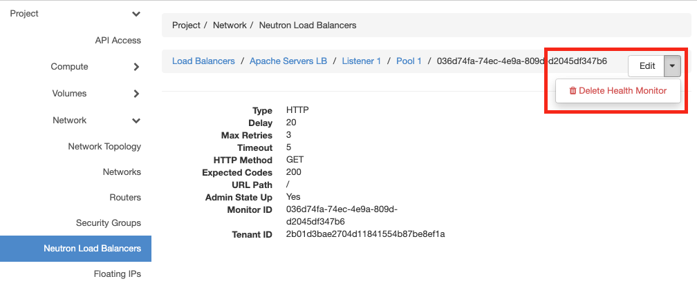 -
Despliega el menú del pool, selecciona
Delete Pooly confirma los cambios. -
Despliega el menú del listener, selecciona
Delete Listenery confirma los cambios. -
Despliega el menú del balanceador, selecciona
Delete Load Balancery confirma los cambios.
10. Networking
Normalmente, en OpenStack-STIC los administradores facilitan los proyectos con la infraestructura básica de red creada. Esta infraestructura básica consiste en una red para el proyecto a la que se conectarán las instancias creadas. Dicha red de proyecto se conectará a la red la UAL mediante un router virtual, que también se proporcionará configurado.
10.1. Configuración de la infraestructura básica de red de un proyecto
En OpenStack, la infraestructura básica de red para un proyecto consta de:
-
Red de proyecto
-
Router de proyecto conectado a red externa y a red de proyecto.
Hay que seguir los pasos siguientes para realizar dicha configuración:
10.2. Crear red de proyecto
-
Inicia sesión en OpenStack-STIC.
-
En el menú de la izquierda selecciona
Project | Network | Networks. -
Pulsa el botón
Create Network -
En la ficha
Networkdel asistente completa el nombre de la red siguiendo la plantilla nombre del proyecto seguido de-net. Mantener seleccionadas las opcionesEnable Admin StateyCreate Subnety dejarnovaenAvailability Zone Hints.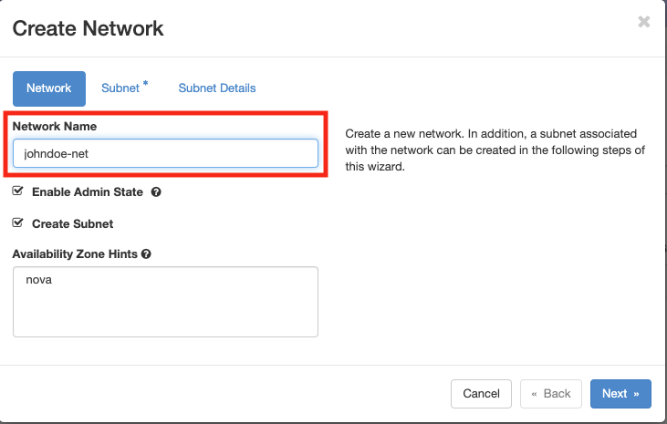 -
En la ficha
Subnetdel asistente completa el nombre de la subred siguiendo la plantilla nombre del proyecto seguido de-subnet. EnNetwork Addressintroducir las direcciones de la red del proyecto en formato CIDR (p.e. `10.0.0.0/24). Dejar el resto con los valores predeterminados como se muestra en la figura.OpenStack-STIC está configurado para que las redes de proyecto que se definan tienen que ser subredes de la red
10.0.0.0/8, definiendo un rango de direcciones comprendidas desde la10.0.0.0hasta la10.255.255.255. Para la mayoría de los casos, una red10.0.0.0/24es el valor más adecuado paraNetwork Address.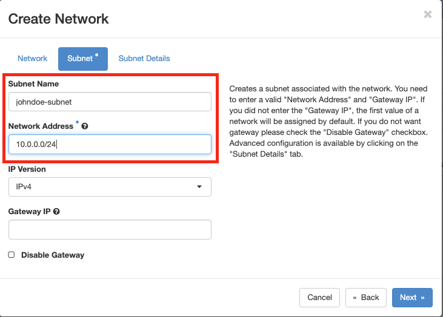 -
En la ficha
Subnet Detailsdel asistente deja activadoEnable DHCPy configura los DNS que se proporcionarán a las instancias en esta red. Los DNS se introducen enDNS Name Serversintroduciendo uno por línea en el caso de tener que introducir varios. Introduciremos al menos un DNS de la UAL (150.214.156.2).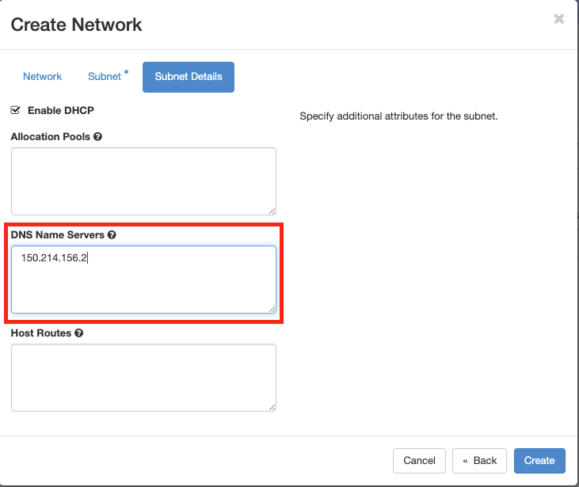 -
Pulsar
Createen el asistente para crear la red.
Una vez creada la red del proyecto, hay que crear un router para conectarla a la red de la UAL de forma que las instancias de la red del proyecto tengan puedan estar conectadas a Internet. En la sección siguiente se explica cómo configurar el router del proyecto.
10.3. Crear router de proyecto
La red de proyecto tiene que conectarse a la red de la UAL a través de un router que crearemos a continuación.
-
Inicia sesión en OpenStack-STIC.
-
En el menú de la izquierda selecciona
Project | Network | Routers. -
Pulsa el botón
Create Router -
En
Router Nameintroduciremos el nombre del router siguiendo la plantilla nombre del proyecto seguido de-net(p,e.johndoe-net). Mantener seleccionada la opciónEnable Admin Statey dejarnovaenAvailability Zone Hints. -
En
External Networkseleccionarual-netde la lista.
Una vez creado el router del proyecto, falta conectarlo a la red del proyecto. Por ahora, sólo se encuentra conectado a la red de externa. Podemos comprobarlo si seleccionamos Project | Network | Network Topology.
En la sección siguiente se explica cómo terminar de configurar el router del proyecto conectándolo a la red del proyecto.
10.4. Añadir interfaz al router
Para terminar de configurar el router y la configuración de red del proyecto hay que añadir una segunda interfaz de red al router para conectarlo a la red del proyecto.
-
Inicia sesión en OpenStack-STIC.
-
Puedes crear la segunda interfaz de red del router de cualquiera de estas dos formas:
-
En el menú de la izquierda selecciona
Project | Network | Network Topology. Sitúa el ratón sobre el router y selecciona el botónAdd Inteface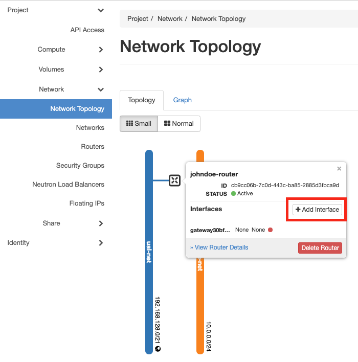 -
En el menú de la izquierda selecciona
Project | Network | Routers. Haz clic sobre el enlace del router. En la fichaInterfacespulsa el botónAdd Interface.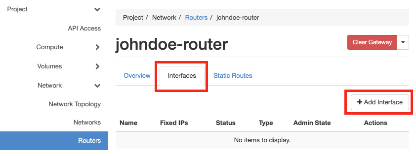
-
-
En el formulario
Add Interfaceselecciona la red del proyecto para que el router quede conectado a la red del proyecto a través de esta interfaz.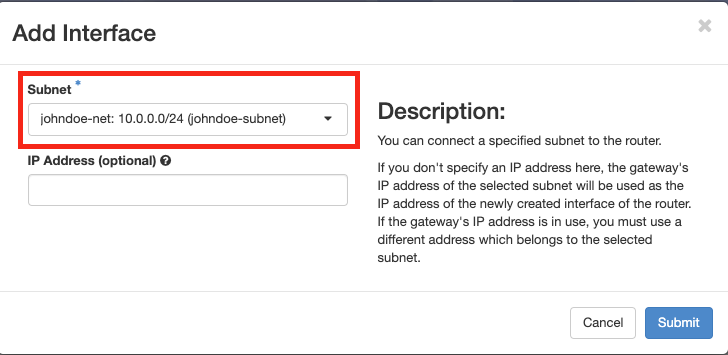 -
Pulsa el botón
Submitpara guardar los cambios.
Finalmente, podemos ver la red configurada en Project | Network | Network Topology.
11. Operaciones extendidas sobre instancias
11.1. Redimensionar una instancia
Si una instancia necesita ampliar los recursos iniciales con los que fue creada, podemos ampliarlos cambiándole el sabor (flavour).
|
Es importante que la instancia esté apagada antes de proceder a redimensionarla. |
-
Seleccionar
Project | Compute | Instances -
Desplegar el menú de acciones de la instancia a mover y seleccionar
Resize Instance. -
Seleccionar el nuevo sabor en el cuadro de diálogo.
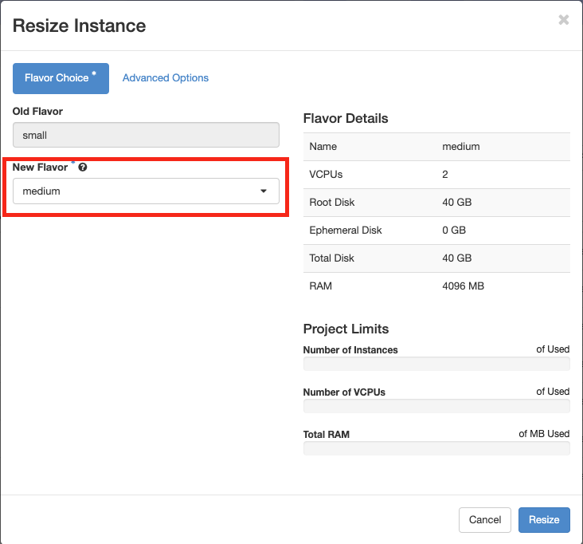 -
Pulsar el botón
Resizeen el asistente. -
Tras la ampliación, pulsar el botón
Confirm Resize/Migrate. -
Iniciar la instancia con su nuevo sabor pulsando el bótón
Start Instance.
11.2. Añadir claves SSH
Hay ocasiones en las que queremos que en una instancia puedan iniciar sesión varios usuarios en una misma cuenta. Esto es especialmente útil para administradores. En estas situaciones la instancia debe tener la clave pública de cada uno de los usuarios que vayan a acceder a ella. Esto lo podemos realizar propocionando las distintas claves públicas en el momento de la creación o a posteriori, una vez que la instancia está creada.
Acceder a la clave pública a incorporar (p.e. id_rsa.pub) con el comando siguiente
cat ~/.ssh/id_rsa.pub
11.2.1. Añadir varias claves SSH durante la creación de una instancia
Durante lo creación de una instancia, no añadas ninguna clave durante la creación de la instancia e introduce el código siguiente en el cuadro de texto Customization Script del paso Configuration del asistente de creación de instancias.
Crea un item en ssh_authorized_keys con la clave pública de cada uno de los usuarios que vayan a iniciar sesión en la instancia.
|
No introduzcas ninguna clave en el paso |
12. Operaciones reservadas a administradores de OpenStack-STIC
12.1. Administración de usuarios
12.1.1. Restablecer contraseña
Para cambiar la contraseña de un usuario, seleccionar el proyecto admin y mostrar la lista de usuarios seleccionando Identity | Users.
En el menú de acciones del usuario, seleccionar Change Password y completar los nuevos valores en el formulario.
12.1.2. Desactivar/Activar usuario
Para desactivar temporalmente la cuenta de un usuario o volver a activarla, seleccionar el proyecto admin y mostrar la lista de usuarios seleccionando Identity | Users.
En el menú de acciones del usuario, seleccionar Disable User o Enable User.
12.1.3. Crear usuario
-
Seleccionar el menú
Identity | Users. -
Pulsar el botón
Create user -
Completar los valores siguientes en el formulario
-
User Name: Login de Campus Virtual -
Description: Nombre completo -
Correo electrónico: Dirección de correo electrónico -
Contraseña -
Mantener el rol
user. Esto determinará los privilegios del usuario -
Si ya existe un proyecto al que vincular el usuario, seleccionarlo de la lista
Primary Project. Si no, crearemos un proyecto nuevo sobre la marcha pulsando el botón+de la lista desplegablePrimary Project.
Crear un proyecto sobre la marcha abre el Asistente para la creación de proyectos. Consulta la sección Crear proyecto para más información.
-
-
Pulsar el botón
Create Userpara proceder a la creación del usuario.
12.2. Mover instancia
Para mover una instancia del servidor en el que se encuentra a otro diferente, seguir los pasos siguientes desde el proyecto admin:
|
Es importante que la instancia esté apagada antes de proceder a cambiarla de servidor. |
-
Seleccionar
Admin | Compute | Instances -
Desplegar el menú de acciones de la instancia a mover y seleccionar
Migrate Instance.No confundir la acción
Migrate InstanceconLive Migrate Instance. Esta última está disponible en OpenStack-STIC pero no tiene funcionalidad asociada por lo que no debe usarse. -
Tras unos instantes se pedirá que se confirme la migración a otro servidor
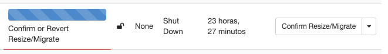 -
Pulsar el botón
Confirm Resize/Migrate. -
Una vez migrada la instancia a otro servidor, iniciar la instancia pulsando el bótón
Hard Reboot Instance. La opciónStart Instancede instancias de otros proyectos no está disponible para el usuarioadmin.
12.3. Convertir una imagen en pública
Las imágenes subidas por los usuarios son privadas y sólo son visibles en el proyecto en el que se han creado. Para convetirlas en públicas y que puedan ser usadas por otros usuarios, seguir estos pasos.
-
Inicia sesión en OpenStack-STIC.
-
Comprobar que se está en el proyecto
admin. -
En el menú de la izquierda selecciona
Admin | Compute | Images. -
Selecciona la imagen a modificar, despliega el listbox de
Actionsy seleccionaEdit Image. -
Pulsa los botones
Public | PrivatedeVisibilityenImage Sharing. -
Aplica los cambios pulsando el botón
Update Image.
12.4. Administración de proyectos
12.4.1. Crear proyecto
-
Inicia sesión en OpenStack-STIC.
-
En el menú de la izquierda selecciona
Identity | Projects. -
Pulsa el botón
Create Project -
En la ficha
Project Informationdel asistente completa el nombre del proyecto (p.e. el login del usuario en Campus Virtual si es un proyecto individual o cualquier otro si es un proyecto compartido). -
Completa la descripción. Para proyectos individuales se recomienda seguir la plantilla
Proyecto deseguido del nombre completo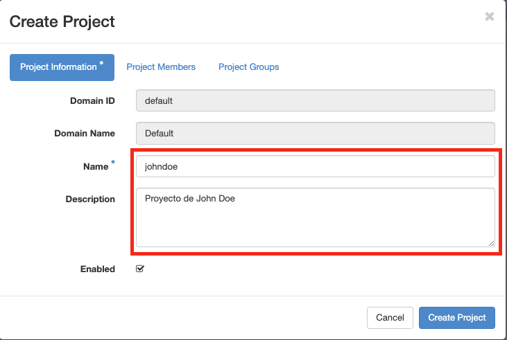 -
En la ficha
Project Membersagrega desde la izquierda (All Users) los miembros del proyecto hasta que la parte derecha (Project Members) tenga los miembros deseados.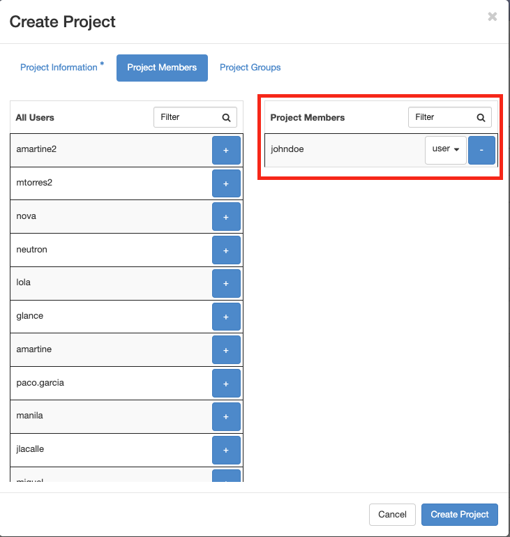 -
Pulsa
Create Project.
12.4.2. Administrar miembros
-
Inicia sesión en OpenStack-STIC.
-
En el menú de la izquierda selecciona
Identity | Projects. -
En la lista
Projectsselecciona el proyecto al que quieras modificar sus miembros, y selecciona la opciónManage Membersen el listbox deActions. -
En la ficha
Project Membersagrega desde la izquierda (All Users) los miembros del proyecto hasta que la parte derecha (Project Members) tenga los miembros deseados. -
Pulsa
Savepara guardar los cambios.
12.4.3. Modificar la cuota de un proyecto
Los proyectos de OpenStack-STIC ofrecen una cuota predetermianda de recursos de cómputo, almacenamiento y red. Es posible cambiar la cuota asignada siguiendo estos pasos:
-
Inicia sesión en OpenStack-STIC.
-
En el menú de la izquierda selecciona
Identity | Projects. -
En la lista
Projectsselecciona el proyecto al que quieras modificar sus miembros, y selecciona la opciónModify Quotasen el listbox deActions. -
Configura los valores adecuados el cuadro de diálogo
Edit Quotas.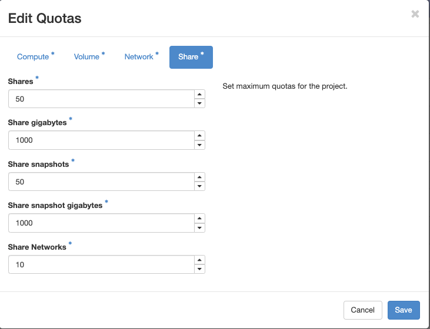 -
Pulsa
Savepara guardar los cambios.
12.5. Asignar IP flotante a un proyecto
La red externa de OpenStack-STIC tiene reservado un rango de direcciones IP para servidores a los que poder asignar nombres DNS, servidores particulares, entre otros. Así, el rango de direcciones al que se accede cuando se solicita una IP flotante es un subconjunto del conjunto total de direcciones de la red ual-net.
Para asignar a un proyecto concreto una IP flotante del grupo de direcciones reservadas, un administrador seguirá estos pasos:
-
Inicia sesión en OpenStack-STIC.
-
En el menú de la izquierda selecciona
Admin | Network | Floating IPs. -
Pulsa el botón
Allocate IP to Project -
En el cuadro de diálogo seleccionar el proyecto al que asignar la IP flotante, indicar la IP a asignar y proporcionar una descripción.
Tras estos pasos, el proyecto de destino tendrá adjudicada esa IP flotante para usarla convenientemente.